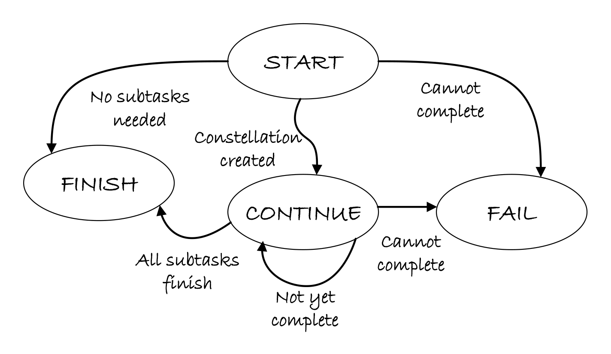

🌟 Agent Registration & Profiling - Overview
Agent Registration is the cornerstone of the AIP (Agent Interaction Protocol) initialization process. It enables dynamic discovery, capability advertisement, and intelligent task allocation across distributed constellation agents.
📋 Introduction
 An overview of the Constellation Agent architecture showing the registration and profiling system.
An overview of the Constellation Agent architecture showing the registration and profiling system.
At the core of AIP's initialization process is the ConstellationClient (implemented as ConstellationDeviceManager), which maintains a global registry of active agents. Any device agent service that exposes a WebSocket endpoint and implements the AIP task dispatch and result-return protocol can be seamlessly integrated into UFO, providing remarkable extensibility.
The multi-source profiling pipeline enables transparent capability discovery and safe adaptation to environmental drift without direct administrator intervention.
For a complete understanding of the constellation system, see:
- Constellation Overview - Multi-device coordination architecture
- Constellation Agent Overview - Agent behavior and patterns
- AIP Protocol Overview - Message protocol details
🎯 Core Concepts
Agent Registry
The agent registry is a centralized store that tracks all active constellation agents. Each registered agent is represented by an AgentProfile that consolidates comprehensive information about the agent's capabilities, system resources, and operational status.
| Component | Responsibility | Location |
|---|---|---|
| ConstellationDeviceManager | Central coordinator for device management | galaxy/client/device_manager.py |
| DeviceRegistry | Device registration and information storage | galaxy/client/components/device_registry.py |
| AgentProfile | Multi-source agent metadata representation | galaxy/client/components/types.py |
| ClientConnectionManager | Server-side client connection tracking | ufo/server/services/client_connection_manager.py |
Multi-Source Profiling
Each AgentProfile consolidates information from three distinct sources, creating a comprehensive and dynamically updated view of each agent.
Source Details:
| Source | Provider | Information Type | Update Frequency |
|---|---|---|---|
| 1. User Configuration | Administrator (devices.yaml + constellation.yaml) | Endpoint identity, user preferences, capabilities | Static (config load) |
| 2. Service Manifest | Device Agent Service (AIP) | Client type, platform, registration metadata | On registration |
| 3. Client Telemetry | Device Client (DeviceInfoProvider) | Hardware specs, OS info, network status | On connection + periodic updates |
Note: While constellation.yaml contains runtime settings like heartbeat intervals, the device-specific configuration is in devices.yaml.
🔄 Registration Flow
 Agent registration flow: multi-source AgentProfile construction and registration.
Agent registration flow: multi-source AgentProfile construction and registration.
Registration Process Overview
The registration process follows a well-defined sequence that ensures comprehensive profiling and validation:
Registration Phases:
| Phase | Description | Components Involved | Result |
|---|---|---|---|
| 1. User Configuration | Administrator registers device with endpoint and capabilities | ConstellationDeviceManager, DeviceRegistry | AgentProfile created with user-specified data |
| 2. WebSocket Connection | Establish persistent connection to device agent server | WebSocketConnectionManager | Active WebSocket channel |
| 3. Service Registration | AIP registration protocol exchange with capability advertisement | RegistrationProtocol, UFOWebSocketHandler | Client type and platform recorded |
| 4. Telemetry Collection | Retrieve runtime system information from device | DeviceInfoProvider, DeviceInfoProtocol | Hardware, OS, and feature data merged |
| 5. Activation | Set device to IDLE state, ready for task assignment | DeviceRegistry | Agent ready for constellation tasks |
Devices can be registered with auto_connect=True to automatically establish connection, or auto_connect=False to require manual connection via connect_device().
📊 AgentProfile Structure
The AgentProfile is the primary data structure representing a registered constellation agent. For detailed information about the AgentProfile and its lifecycle operations, see Agent Profile Documentation.
Core Fields
The AgentProfile is the primary data structure representing a registered constellation agent:
@dataclass
class AgentProfile:
"""Device information and capabilities"""
# Identity
device_id: str # Unique device identifier
server_url: str # WebSocket endpoint URL
# Platform & Capabilities
os: Optional[str] = None # Operating system (windows, linux, darwin)
capabilities: List[str] # Advertised capabilities/features
metadata: Dict[str, Any] # Additional metadata
# Operational Status
status: DeviceStatus # Current connection/operational status
last_heartbeat: Optional[datetime] # Last heartbeat timestamp
# Connection Management
connection_attempts: int = 0 # Connection retry counter
max_retries: int = 5 # Maximum retry attempts
# Task Execution
current_task_id: Optional[str] = None # Currently executing task ID
Field Categories:
| Category | Fields | Purpose |
|---|---|---|
| Identity | device_id, server_url |
Unique identification and endpoint location |
| Platform | os, capabilities, metadata |
System type and advertised features |
| Status | status, last_heartbeat |
Real-time operational state tracking |
| Resilience | connection_attempts, max_retries |
Connection retry management |
| Execution | current_task_id |
Task assignment tracking |
Metadata Structure
The metadata field is a flexible dictionary that aggregates information from all three sources:
metadata = {
# From User Configuration (Source 1)
"location": "home_office",
"performance": "high",
"description": "Primary development laptop",
"operation_engineer_email": "admin@example.com",
# From Service Manifest (Source 2)
"platform": "windows",
"registration_time": "2025-11-06T10:30:00Z",
# From Client Telemetry (Source 3)
"system_info": {
"platform": "windows",
"os_version": "10.0.22631",
"cpu_count": 16,
"memory_total_gb": 32.0,
"hostname": "DESKTOP-DEV01",
"ip_address": "192.168.1.100",
"platform_type": "computer",
"schema_version": "1.0"
},
"custom_metadata": {
"datacenter": "us-west-2",
"tier": "production"
}
}
For a complete example, see the Agent Profile Documentation.
🔄 Agent Lifecycle States
 Lifecycle state transitions of the Constellation Agent.
The agent lifecycle is managed through a state machine that tracks connection, registration, and task execution states. For more details on agent behavior and state management, see Constellation Agent State Management.
State Definitions
class DeviceStatus(Enum):
"""Device connection status"""
DISCONNECTED = "disconnected" # Not connected to server
CONNECTING = "connecting" # Attempting to establish connection
CONNECTED = "connected" # Connected, initializing
REGISTERING = "registering" # Performing registration handshake
IDLE = "idle" # Connected and ready for tasks
BUSY = "busy" # Executing a task
FAILED = "failed" # Connection/execution failed
State Transition Diagram
Transition Events:
| From State | To State | Trigger | Action |
|---|---|---|---|
| DISCONNECTED | CONNECTING | connect_device() |
Initiate WebSocket connection |
| CONNECTING | CONNECTED | WebSocket handshake complete | Update status |
| CONNECTED | REGISTERING | Send REGISTER message | AIP registration protocol |
| REGISTERING | IDLE | Registration confirmed | Collect system info, ready for tasks |
| IDLE | BUSY | assign_task_to_device() |
Execute task |
| BUSY | IDLE | Task completes | Clear current_task_id |
| Any | DISCONNECTED | Connection lost | Cleanup, schedule reconnection |
| FAILED | CONNECTING | Retry timer | Attempt reconnection (if under max_retries) |
Important: When a device disconnects or enters FAILED state, the system automatically schedules reconnection attempts up to max_retries times with reconnect_delay interval.
🛠️ Key Components
1. ConstellationDeviceManager
File: galaxy/client/device_manager.py
The central coordinator for all device management operations in the constellation system.
Responsibilities:
- Device registration and lifecycle management
- Connection establishment and monitoring
- Task assignment and execution coordination
- Automatic reconnection handling
Key Methods:
class ConstellationDeviceManager:
async def register_device(
device_id: str,
server_url: str,
os: str,
capabilities: List[str],
metadata: Dict[str, Any],
auto_connect: bool = True
) -> bool
async def connect_device(device_id: str) -> bool
async def assign_task_to_device(
task_id: str,
device_id: str,
task_description: str,
task_data: Dict[str, Any]
) -> ExecutionResult
def get_device_info(device_id: str) -> Optional[AgentProfile]
See Device Registry Documentation for DeviceRegistry details.
2. DeviceRegistry
File: galaxy/client/components/device_registry.py
Manages device registration and information storage with a focus on data management.
Responsibilities:
- Store and retrieve AgentProfile instances
- Update device status and metadata
- Track connection attempts and heartbeats
- Merge multi-source information
Key Methods:
class DeviceRegistry:
def register_device(...) -> AgentProfile
def update_device_status(device_id: str, status: DeviceStatus)
def update_device_system_info(device_id: str, system_info: Dict)
def set_device_busy(device_id: str, task_id: str)
def set_device_idle(device_id: str)
3. RegistrationProtocol (AIP)
File: aip/protocol/registration.py
Handles AIP registration message exchange for both device and constellation clients.
Responsibilities:
- Device agent registration
- Constellation client registration
- Capability advertisement
- Registration validation and confirmation
Key Methods:
class RegistrationProtocol(AIPProtocol):
async def register_as_device(
device_id: str,
metadata: Dict[str, Any],
platform: str
) -> bool
async def register_as_constellation(
constellation_id: str,
target_device: str,
metadata: Dict[str, Any]
) -> bool
async def send_registration_confirmation()
async def send_registration_error(error: str)
See AIP Protocol Documentation for protocol details.
4. DeviceInfoProvider
File: ufo/client/device_info_provider.py
Collects device system information (telemetry source).
Responsibilities:
- Auto-detect platform, OS, and hardware
- Collect CPU, memory, network information
- Detect supported features based on platform
- Provide DeviceSystemInfo structure
Key Methods:
class DeviceInfoProvider:
@staticmethod
def collect_system_info(
client_id: str,
custom_metadata: Optional[Dict]
) -> DeviceSystemInfo
See Device Info Provider Documentation for telemetry details.
5. ClientConnectionManager (Server)
File: ufo/server/services/client_connection_manager.py
Server-side client connection tracking and management. For detailed information about the server-side implementation, see Client Connection Manager Documentation.
Responsibilities:
- Track connected clients (devices and constellations)
- Store device system information received during registration
- Manage session-to-client mappings
- Merge server configuration with client telemetry
Key Methods:
class ClientConnectionManager:
def add_client(
client_id: str,
platform: str,
ws: WebSocket,
client_type: ClientType,
metadata: Dict
)
def get_device_system_info(device_id: str) -> Optional[Dict]
📝 Configuration
Agent registration uses two configuration files:
1. config/galaxy/devices.yaml - Device definitions:
- Device endpoints and identities
- User-specified capabilities and metadata
- Connection parameters (max retries, auto-connect)
2. config/galaxy/constellation.yaml - Runtime settings:
- Constellation identification and logging
- Heartbeat interval and reconnection delay
- Task concurrency and step limits
See Galaxy Devices Configuration and Galaxy Constellation Configuration for details.
Example Device Configuration (devices.yaml):
# Device Configuration - YAML Format
# Runtime settings are configured in constellation.yaml
devices:
- device_id: "windowsagent"
server_url: "ws://localhost:5005/ws"
os: "windows"
capabilities: ["web_browsing", "office_applications"]
metadata:
location: "office_desktop"
performance: "high"
max_retries: 5
auto_connect: true
For complete configuration schema, examples, and best practices, see:
👉 Galaxy Devices Configuration Guide
🚀 Usage Example
Basic Registration
from galaxy.client.device_manager import ConstellationDeviceManager
# Initialize manager
manager = ConstellationDeviceManager(
task_name="test_constellation",
heartbeat_interval=30.0,
reconnect_delay=5.0
)
# Register and connect device
success = await manager.register_device(
device_id="windows_workstation",
server_url="ws://localhost:5005/ws",
os="windows",
capabilities=["gui", "browser", "office"],
metadata={
"location": "home_office",
"performance": "medium"
},
auto_connect=True # Automatically connect after registration
)
if success:
print("✅ Device registered and connected")
# Get device profile
profile = manager.get_device_info("windows_workstation")
print(f"Device: {profile.device_id}")
print(f"Status: {profile.status.value}")
print(f"Capabilities: {profile.capabilities}")
print(f"System Info: {profile.metadata.get('system_info')}")
Task Assignment
# Assign task to registered device
result = await manager.assign_task_to_device(
task_id="task_001",
device_id="windows_workstation",
task_description="Open Excel and create a report",
task_data={"file_path": "C:\\Reports\\monthly.xlsx"},
timeout=300.0
)
print(f"Task Status: {result.status}")
print(f"Result: {result.result}")
For more details on task assignment and execution, see: - Registration Flow Documentation - Detailed examples - Constellation Task Distribution - Task routing strategies
🔗 Cross-References
Related Documentation
| Topic | Document | Description |
|---|---|---|
| Device Info Collection | Device Info Provider | Client-side telemetry collection |
| AIP Protocol | AIP Overview | Agent Interaction Protocol fundamentals |
| AIP Messages | AIP Messages | Message structure and types |
| Agent Profile | Agent Profile | Detailed AgentProfile structure |
| Registration Flow | Registration Flow | Step-by-step registration process |
| Galaxy Devices Config | Galaxy Devices Configuration | YAML configuration reference |
| Device Registry | Device Registry | Registry component details |
| Constellation System | Constellation Overview | Multi-device coordination |
| Client Connection Manager | Server Connection Manager | Server-side connection tracking |
Architecture Diagrams
- Constellation Agent Overview:
documents/docs/img/constellation_agent.png - Agent Registration Flow:
documents/docs/img/agent_registry.png - Agent Lifecycle States:
documents/docs/img/agent_state.png
💡 Key Benefits
The multi-source profiling approach provides several advantages:
1. Improved Task Allocation Accuracy
- Administrators specify high-level capabilities
- Service manifests advertise supported tools
- Telemetry provides real-time hardware status
2. Transparent Capability Discovery
- No manual system info entry required
- Automatic feature detection based on platform
- Dynamic updates without configuration changes
3. Safe Adaptation to Environmental Drift
- System changes (upgrades, hardware additions) automatically reflected
- No administrator intervention needed for routine updates
- Consistent metadata across distributed agents
4. Reliable Scheduling Decisions
- Fresh and accurate information for task routing
- Hardware-aware task assignment (CPU/memory requirements)
- Platform-specific capability matching
🎯 Next Steps
- Understand AgentProfile in Detail: Read Agent Profile Documentation
- Learn Registration Process: Follow Registration Flow
- Configure Your Devices: See Galaxy Devices Configuration
- Explore Device Registry: Check Device Registry
- Study AIP Protocol: Read AIP Documentation
📚 Additional Resources
- Source Code:
galaxy/client/device_manager.py - AIP Protocol:
aip/protocol/registration.py - Device Info:
ufo/client/device_info_provider.py - Configuration:
config/galaxy/devices.yaml
Best Practice: Always configure devices with meaningful metadata and capabilities to enable intelligent task routing. The system will automatically enhance this information with telemetry data.